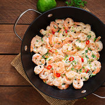
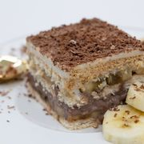
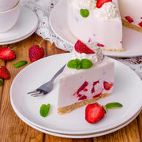
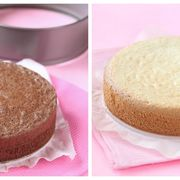
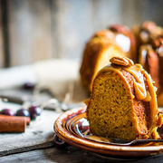
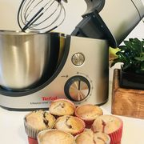
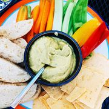
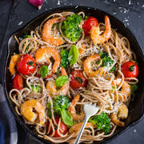
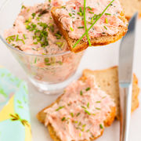

RETETE
APERITIVE
Supe si ciorbe
SALATE
Mancaruri
DESERT
Paste
Sosuri
Sarbatori
RETETE VEGETARIENE
DULCETURI SI CONSERVE
Cocktail
CAFEA
Sfaturi
RETETE FAVORITE
Cauta in 27.205 retete
Gasesti adunate la un loc retete din tot internetul romanesc.
Exemple: "
Salata de broccoli si bacon
", "
visinata
", ...
Cele mai noi retete

Creveți în unt. Cel mai bun mod de a găti creveții
in
Mancaruri

Prăjitură rapidă fără coacere
in
Desert

Prăjitură fără coacere cu iaurt
in
Desert

Reţete blat de tort
in
Desert

Prăjitură cu nucă și caramel
in
Desert
Clătite americane cu afine
in
Desert

Brioșe din făina integrală cu cireșe și căpșune
in
Desert
Pui la cuptor cu susan, broccoli și lămâie
in
Mancaruri

Hummus de avocado cu crudități
in
Aperitive
Rețetă simplă de croasant cu migdale
in
Desert
Cum să faci paella vegetariană
in
Mancaruri
Pulpe de pui cu chorizo
in
Mancaruri
Tartă cu brânză și dovlecei
in
Mancaruri

Paste picante cu creveți și roșii
in
Paste
Rețetă sănătoasă. Chilli de legume ușor de preparat
in
Mancaruri
Frittata cu spanac și brânză de capră
in
Mancaruri

Pate din somon afumat
in
Aperitive
Masa pentru întreaga familie, într-o tavă: friptură de pui și garnitură la cuptor
in
Mancaruri
INGREDIENTE
ceapa
dovlecei
fasole
leustean
masline
vinete
portocale
zmeura
otet
ketchup
Retete de vara
Salata asortata de ardei
Salata cu broccoli si conopida
Salata cu nuca, mar si portocala
Salata cu orez si menta
Salata cu pui si ciuperci
Salata de castraveti orientala
Salata de pui cu sos tartar
Salata de varza alba cu susan
Salata greceasca
Salata mixta
Lifestyle
Retete
Horoscop
City
Forum
Nu ai cont?
Inregistreaza-te
|
Log in
Horoscopul de azi
Horoscop 2021
Sanatate
Mama si copilul
Relatii
Moda
Diete
Retete
Forum
Sănătate
Dietă & Fitness
Casă şi familie
Mama și copilul
Frumuseţe
Modă
Divertisment
Dragoste & Sex
Psihologie
Carieră
Actualitate
Sănătate
Ziua Mondială a Sclerozei Multiple 2021 - Conectați la nevoile pacienților
Sănătate
13 obiceiuri pe care le considerăm inofensive, dar care reprezintă un mare pericol pentru sănătate
Sănătate
De ce este atât de important să nu ne așezăm pe pat cu hainele de afară. 4 motive
TRENDING:
Sarcina
Ceaiuri
Inima
Psihologie
Ginecologie
Stomatologie
Colesterol
Anticonceptionale
Test sarcina
shakshuka
Shakshuka cu fasole neagră și brânză
#ShowYourStyle Chef Cristian Boca îți prezintă cea mai colorată rețetă de brownie
alimentație sănătoasă
Consultație la specialist: ”Nu putem cere unui copil să mănânce broccoli când părintele mănâncă cartofi prăjiți”
TRENDING:
Diete
Fitness
Dieta Dukan
Relaxare
Yoga
Intretinere
Aerobic
Exercitii abdomen
Nutritie
Vedete
Mila Kunis și Ashton Kutcher și-au construit o casă de tip hambar în Los Angeles. Arată spectaculos!
Samsung lansează provocarea #BespokeMyHome, în Europa și S.U.A., alături de renumiți chefi bucătari și designeri
Divertisment
E de râs, dar și de plâns! 13 invenții pe care nu le vom putea înțelege niciodată
TRENDING:
Mobila bucatarie
Amenajari interioare
Mobila
Canapele
Dormitoare
Design interior
Parenting
Jurnal de mama singura
Gravide
bunici
Cum au înțeles bunicii mei că ”mi-am făcut pe alții”
mâncare
Ghidul inventatorului de mâncăruri
Familie
Un imigrant stabilit la New York a absolvit facultatea împreună cu fiica sa, în timp ce lucra ca sudor. A primit cea mai înaltă distincție!
Frumusețe
Ce se întâmplă dacă nu mai porți sutien? Efectele asupra sânilor tăi
Frumusețe
Naomi Campbell crede că aerul condiționat provoacă riduri. Ce spun medicii dermatologi?
Cosmetică
Secretul lui Nicole Kidman pentru un ten perfect, la 53 de ani. Costă doar 40 de lei!
TRENDING:
Păr
Rochii
Unghii
Parfumuri
Coafuri
Machiaj
Sani
Manichiura
Sampon
Pantofi
Ghid pentru tipurile de pantofi damă pentru fiecare ocazie și stil
Modă
Fiica lui Eminem a devenit o fashionistă de succes. Cum arată Hailie Jade la 25 de ani
Stire
Noul brand Atelier Bolero lansează Allure, colecția de primăvară – vară 2021
TRENDING:
Rochii
Rochii de seara
Rochii de mireasa
Costume de baie
Pantofi
Rochii elegante
Inele de logodna
Verighete
Ochelari de soare
Vedete
12 vedete care regretă că au devenit faimoase
Vedete
Cum arată astăzi cele mai frumoase femei ale secolului trecut. 26 de imagini
Casa Regală
Prințul Harry a explicat de ce i-a fost dificil să conștientizeze suferința după moartea mamei sale
TRENDING:
Meghan Markle
Kate Middleton
Kim Kardashian
Johnny Depp
Teo Trandafir
Angelina Jolie
Dana Rogoz
Dani Otil
Smiley
Relații
De ce femeile singure sunt mai fericite decât cele care au o relație. 6 motive
Relații
3 semne că v-ați iubit într-o viață anterioară
Relații
5 lucruri ciudate pe care bărbații le doresc de la o femeie
TRENDING:
Dragoste
Romantic
Viata sexuala
Relatii
Cuplu
Iubire
Casatorie
Sex
Kama Sutra
Psihologie
5 tipare negative de gândire care te împiedică să evoluezi
Autocunoastere
5 semne ca ești epuizată emoțional fără să îți dai seama
Psihologie
7 mantre puternice pentru fiecare zi a săptămânii 26 aprilie - 2 mai
Carieră
Cele mai bune sfaturi oferite de milenialii care și-au triplat salariile în 10 ani
Biroul de acasă
Tehnica Pomodoro te ajută să fii mai productivă când lucrezi de acasă
Afacerea ta
9 idei de afaceri de familie
O România Curată
Mișcarea O Românie Curată Începe de Acasă se extinde la nivel național
vaccinare anti-HPV
Vaccinarea gratuită anti-HPV urmează să fie extinsă și la fetele de peste 14 ani și la băieți
cancer
”Arta învinge cancerul”, un eveniment dedicat Săptămânii Europene de Luptă Împotriva Cancerului
TRENDING:
Din culise
Interviu
Stirea zilei
Tema zilei
Iesirea din autism
Despărţiri celebre
Vesti Bune
Covid-19
Pandemie